SMA PLAYER · 2025–2026
اللاعبون والانتقالات
من اكتشاف المواهب إلى فرص الأندية، نتابع مسيرة لاعبي SMA عامًا بعد عام.
اللاعبون والانتقالات
تعرف على لاعبينا والوجهات التي واصلوا إليها مسيرتهم الكروية.
انتقالات 2024
من SMA إلى الأندية: محطات لاعبينا لعام 2024.
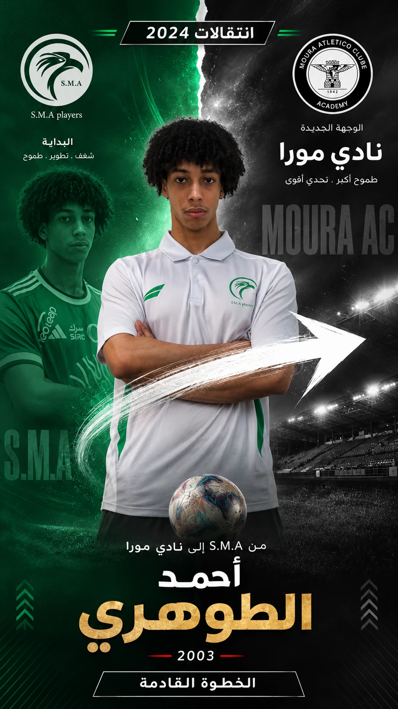
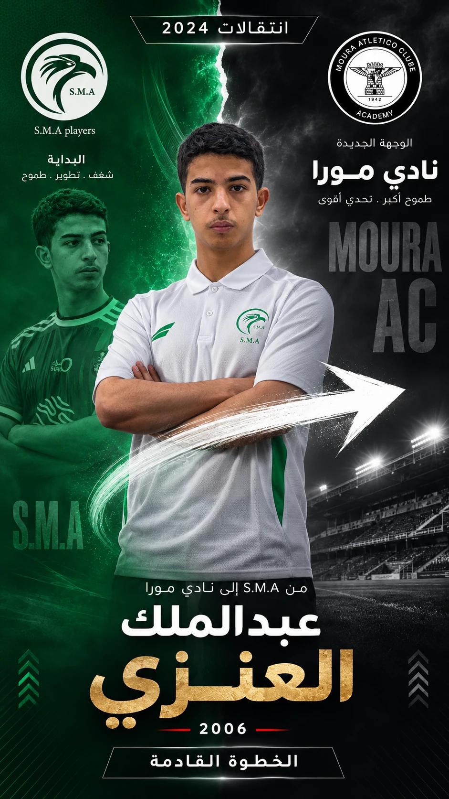
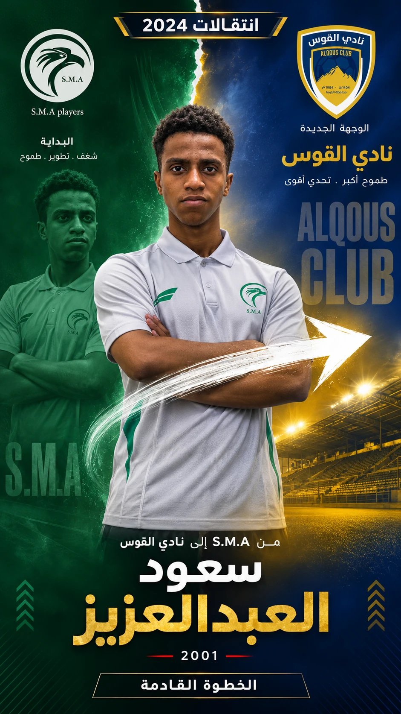
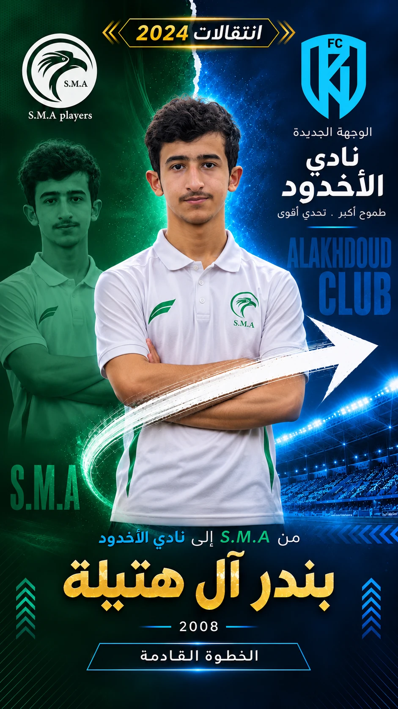
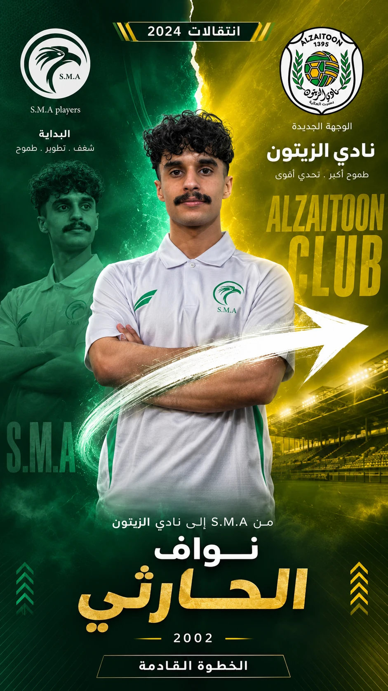
انتقالات 2025
من SMA إلى الأندية: محطات لاعبينا لعام 2025.
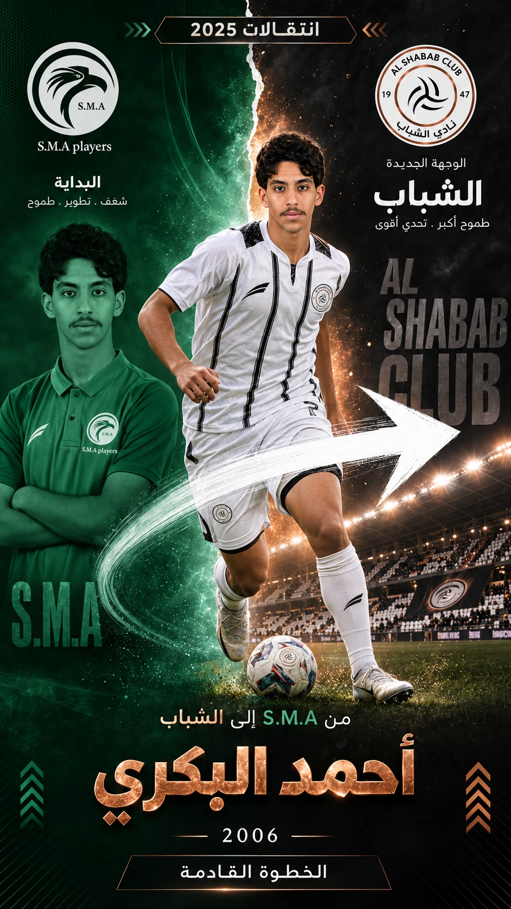
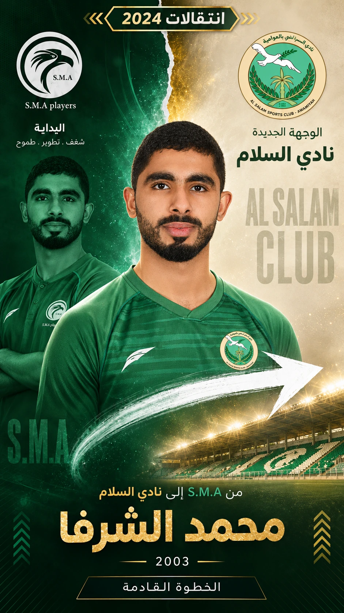
انتقالات 2026
لاعبو عام 2026 وانتقالاتهم إلى الأندية.
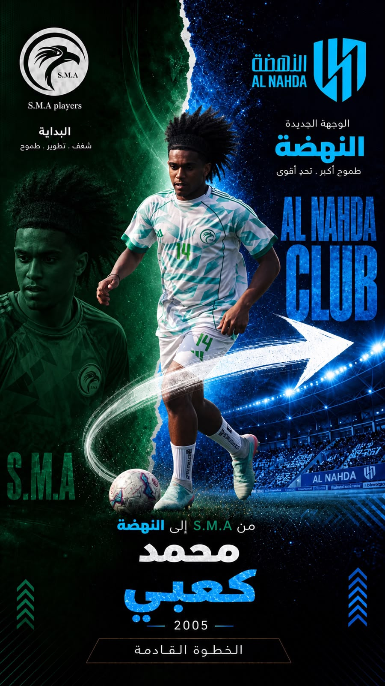
من S.M.A إلى النهضةمحمد كعبيمواليد 2005نادي النهضة
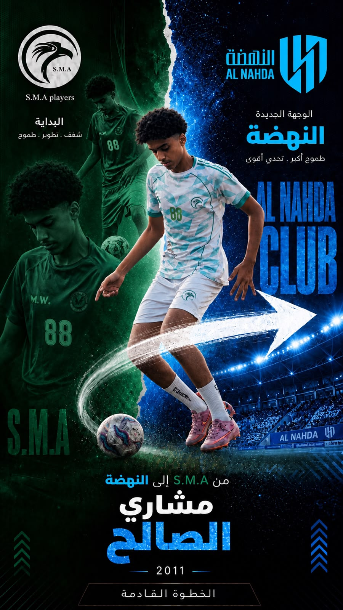
من S.M.A إلى النهضةمشاري الصالحمواليد 2011نادي النهضة
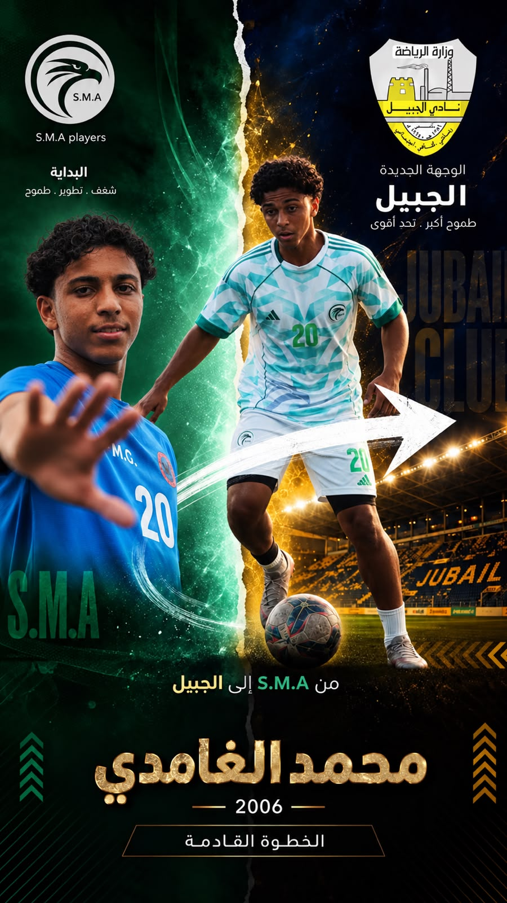
من S.M.A إلى الجبيلمحمد الغامديمواليد 2006نادي الجبيل
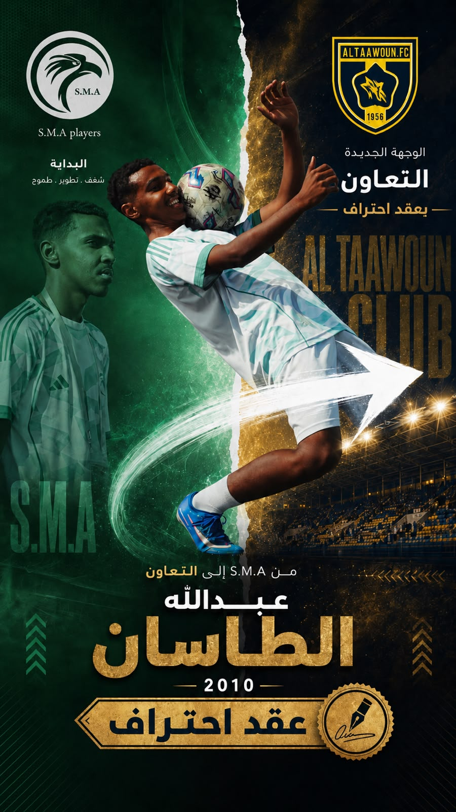
من S.M.A إلى التعاونعبدالله الطاسانمواليد 2010نادي التعاونعقد احتراف
من S.M.A إلى القوارةأنس العمريمواليد 2002نادي القوارة
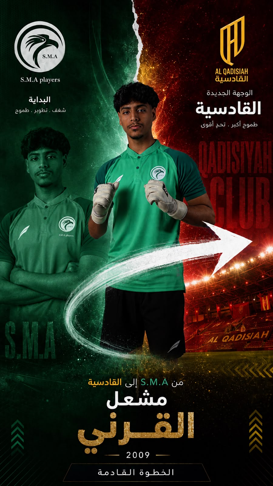
من S.M.A إلى القادسيةمشعل القرنيمواليد 2009نادي القادسية
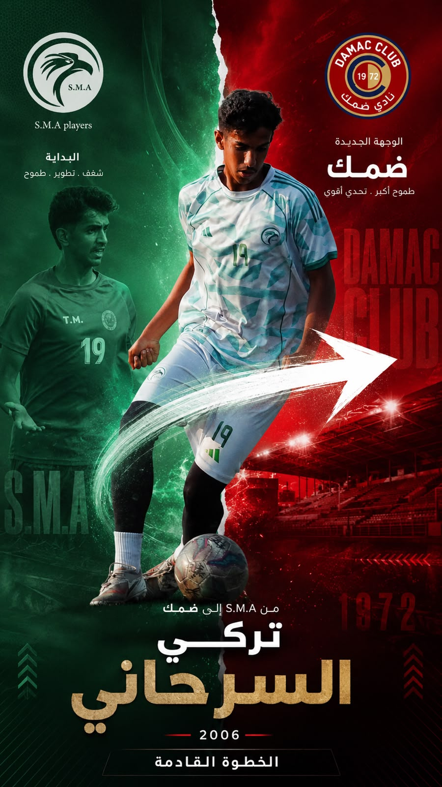
من S.M.A إلى ضمكتركي السرحانيمواليد 2006نادي ضمك
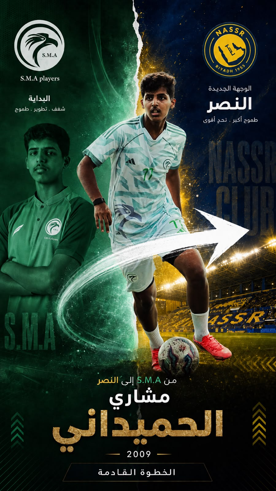
من S.M.A إلى النصرمشاري الحميدانيمواليد 2009نادي النصر